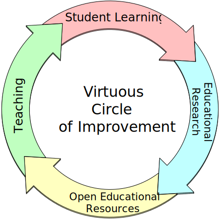
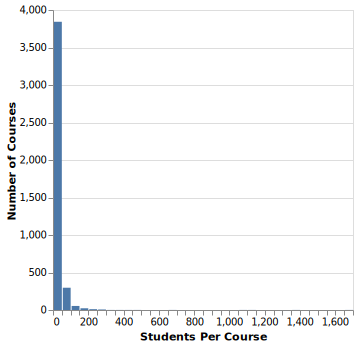

Chapter 1 Introduction
Welcome to the Runestone Academy instructor interface. This guide will try to help you navigate the various tasks that you can do with Runestone. Your first question might be what are those tasks?
- Create a Course
- Add and remove students
- Add and remove TAs or co-instructors
- Create homework assignments
- Grade the homework assignments
- Prepare for class by understanding where my students are confused
- Configure the spaced practice tool for my students
- Prepare an assessment for my students to take online with Runestone
- Use Peer Instruction during class
- Configure Runestone to work with Canvas or Moodle
While that is a long list of things that you can do there is very little that you must do. Many instructors use Runestone Academy very minimally at first and then do more the next time.
Section 1.1 The Runestone Philosophy
The primary reason that Runestone was created was to be an interactive eBook server that would motivate students to actually read and experiment with the content provided by the author. This idea was born in my head in the fall of 2010 as I was suffering from a serious case of writers block while trying to work on a second edition of a paper textbook. Why should textbooks be static? Especially computer science textbooks!? From this frustration I stopped working on the update and started trying to create an interactive computer science textbook. My primary motivation was to make every example “runnable” and “editable” so that students could read code, run code, and then modify that code to see how it behaved differently with their changes.
Having come to Luther College from the
GroupLens research group and an internet startup company, I also knew the value of collecting data. So I also set out to make sure that every action a student took within the textbook was captured. I had no idea what we were going do with the data, but my intuition was that we could learn valuable lessons about how students were learning if we captured and analyzed enough data. Collect the data first and then figure out how to make use of it later.Everything else you see about Runestone Academy today came later, and I’ll cover more of that evolution in Section 1.6 . But the takeway is that for us the student experience is always foremost in our minds. Everything that you as an instructor can do with Runestone follows from that philosophy of collect the data first and then see what we can do with it.
I had never heard of the term Learning Engineering until the summer of 2021, but that is really what Runestone is and has always been about.
Wikipedia defines Learning engineering as follows Learning Engineering is the systematic application of evidence-based principles and methods from educational technology and the learning sciences to create engaging and effective learning experiences, support the difficulties and challenges of learners as they learn, and come to better understand learners and learning. It emphasizes the use of a human-centered design approach in conjunction with analyses of rich data sets to iteratively develop and improve those designs to address specific learning needs, opportunities, and problems, often with the help of technology.Today (August 2022) if you asked me I would say that Runestone is a LEAP. A learning Engineering and Analytics Portal. Many of the innovative features in Runestone have come from first class pedagogical research. All of Runestone has been evolved over the years by paying attention to the data we collect and the feedback we get from instructors and students. All of this has been possible because we realized early on that most instructors do not want to run and manage their own servers, and that we could provide a valuable service by providing a portal to free, high quality interactive textbooks.
The diagram below illustrates what we are trying to create. Which is a virtuous circle whereby students learn more effectively, teachers can learn to teach more effectively, and authors can learn to write better textbooks.

All of this is to say that although Runestone supports many of the functions of an LMS, Runestone was never designed to be an LMS. Runestone is much more, and in order for you as an instructor to get the most out of Runestone you may need to adjust your thinking and expectations. Hopefully this guide will help you do that.
Section 1.2 Courses Versus Books
The first thing to understand about Runestone is the difference between a book and a course. This has long been a point of confusion. Runestone was originally conceived of as a system for building interactive textbooks. But, as soon as you start to include interactive things like coding and multiple choice questions the next logical step is for someone (likely you - dear reader) to want to evaluate that work and record a grade. A grade only makes sense in the context of a course, so we created the ability for you to make a course for your students. But because the central notion always was a book there has always been the limitation that a course can only be tied to a single book. This limitation continues, but is something we are thinking about how to relax in the future. In the meantime Section 3.2 will guide you through the process of creating a course around your chosen textbook.
The fact that Runestone allows you to do many of the things that you would normally do in an LMS like Canvas or Moodle has led many people to think of Runestone as an LMS like system. We reject that label and claim that Runestone is much more than an LMS. Runestone is a LEAP Learning Engineering and Analytics Portal. Briefly, Learning Engineering is “is the systematic application of evidence-based principles and methods from educational technology and the learning sciences to create engaging and effective learning experiences, support the difficulties and challenges of learners as they learn, and come to better understand learners and learning.” See
this article for more.
Because a book and a course are so tightly coupled we can do many things that an LMS cannot. We can collect much more fine-grained data about what your students are doing. Your students can do their homework by answering questions as they read them in context, or they can answer them on a homework page that has only the questions. In fact it does not matter where they do their work if they answer the question in one place it will also appear in the other. Runestone captures every interaction your students have with a question whether they answer the question before you assign it or after its assigned or even long after a homework assignment is due we save that interaction and timestamp it. This gives you a lot of flexibility over accepting late work (or not) For every question you can see the time of your students first interaction with that question as well as their last, you can see their entire history of interactions with that question. For programming assignments this can be a powerful learning tool for both you and your student.
Section 1.3 Privacy
In order to do things like remember work in progress, record scores, etc. Runestone needs a student to have a persistent user id. In 2022 we realize it is quite common to use one’s email address as that persistent identifier, but we do not. We still use usernames so that you or your student can make up something completely disconnected from a students personal information. In fact one can successfully use runestone with a random username, a fake email address, and a fake first and last name. The only caveat to that is that if you forget your password you won’t be able to reset it with a fake email address! See Subsection 4.2.1 for more information.
We urge you to read our
Privacy Policy and our Terms of Service We understand that in 2022 it is common, especially for high schools, to want us to sign a data privacy agreement. Please understand that as an open source project we do not have a lot of resources for reading legalese. Thankfully many states have now adopted the National Data Privacy Agreement (NDPA) We have studied and are very happy to sign the NDPA. In fact for many states we only have to sign the agreement once and all you have to do is sign and send us Exhibit E. This blog post explains more about Why we are happy to sign the NDPA
One of the strengths of Runestone is that many of our features have been created and tested and validated by published research! That is good news for your students. It also means that we do cooperate with a small number of highly trusted research partners at major universities. We give them access to fully de-identified data from our database to help them conduct experiements on new features. This makes the experience better for everyone while keeping your student’s work anonymous.
Section 1.4 Why am I seeing Ads
Our mission is to make high quality textbooks available to all students for free. But, servers cost money, development takes time and money. One way that we support the mission of Runestone is to show ads to a some of our visitors. Specifically we only show ads to people who have not created an account. That means that the vast majority of ads are actually served to people who land on one of our pages because of a search. Generally speaking these are not students in a class.
If you want to make the ads go away it is easy, just create an account. Don’t worry, we don’t sell your email address, or give away your name. Feel free to use a fake email and fake name. Although if you forget your password you won’t be able to reset it without a working email. As an instructor you should read Section 4.2 if you want to set your students up to use Runestone Academy anonymously.
If every class that used Runestone could pay $100 for the semester regardless of the size of the class we would have enough money to be fully sustainable, and not show any ads to anyone. We would love that. We are not huge fans of ads either. So maybe you can help us figure out how to do that.
Section 1.5 A Word about Scale
This section added in September 2023.
As you will see in our history, Runestone came out of a small liberal arts college. Class sizes were around 30 students. A huge number of our courses are high school AP CS courses using the CSAwesome book. Those courses tend to be in the 10 -- 50 student range. For courses that size Runestone has worked well for many years. In fact here is a histogram of course sizes over the last two years.

Recently Runestone Academy has become a tool for courses at much larger institutions and consequently we are seeing course sizes grew. I was totally taken off guard in August of 2023 when three courses containing 1000+ students were created.
We have architected the website to be horizontally scalable. Which means we can support many thousands of courses at the same time. So, we can support many thousands of courses, but not many thousands of students in a single course. We are working on that, but it is a big job. The good news is that the parts that suffer are the parts for the instructor interface. The student experience is not affected. So, if you are teaching a course of 1000+ students, your students will not notice any problems. But you will. Further good news, the instructor interface is undergoing a major rewrite, so know that we are working on it, and are now aware that 1000+ student courses are a thing.
If you are teaching a course of 500+ students here are some things to keep in mind:
- Things like the gradebook or student progress tabs, are likely to time out (502 Gateway timeout). The grader itself is probably something you should start when you can just let it run for an hour or more.
- If you want to use the practice tool for a very large course then you should definitely set the option to have flashcards generated when a student starts a page or the option for when they complete a page. If you try to have it generate flashcards for the students when you mark a section as complete you are going to be frustrated!
- You may also wish to consider breaking a very large course into multiple courses corresponding to different sections. You can set up one section as a master and then your TAs can copy assignments from the master course.
- If you are from an institution that has classes of 1000+ then I would ask that you really make an effort to support Runestone Academy. Either directly from your department, or stating on your syllabus that students should donate. Please recognize that a course of 1000+ puts a lot of additional demand on our servers. We strive to give you a great experience so as more students register we add more servers. Every server we add costs money. In the future we may be forced to institute a small fee for very large courses just to help us cover our costs.
If your course is in the 100-300 student range you may notice that things are a bit slower than you would like, but generally it should all work.
Section 1.6 A Brief History of Runestone
The Runestone project began in on my sabbatical in 2011. I’ve already mentioned that I had serious writers block because I wanted computer science textbooks to be interactive. The first stage in fixing that problem was finding a way to run Python in the browser. This led me to the
Skulpt Project Scottie Graham had implemented Python 2.6-ish by re-implementing CPython in Javascript. While the core was there Skulpt was missing many pieces, such as a turtle graphics module. Since I loved using turtle graphics as a way for students to get fun, immediate feedback on their code I set about trying to add turtle graphics to skulpt. Since I knew very little about Javascript that sucked up a couple of months of my Sabbatical, but was a lot more fun than updating a textbook. With turtle graphics in hand I knew I had hit on something!The next problem was that I knew that as an author I didn’t want to have to write a 100 lines of custom javascript for every example! I needed a way, ideally a really simple way of just surrounding some python code with a wrapper and letting a tool build the html and javascript needed to create a widget on the webpage that ran the Python. This led me to
Sphinx Sphinx is a wonderful writing tool, widely used in the Python community. It also has a rich collection of extensions, and a syntax that is just what I was looking for! With sphinx I could write something like:.. activecode:: some_id
print("hello world")
Sphinx would turn that into html that looked like:
<div class="runestone explainer ac_section ">
<div data-component="activecode" id=over_ac_example1 data-question_label="1.1.1">
<div id=over_ac_example1_question class="ac_question col-md-12">
</div>
<textarea data-lang="python" id="over_ac_example1_editor" data-timelimit=25000 data-coach="true" data-codelens="true" data-audio='' data-wasm=/_static style="visibility: hidden;">
print("My first program adds a list of numbers")
myList = [2, 4, 6, 8, 10]
total = 0
for num in myList:
total = total + num
print(total)
</textarea>
</div>
</div>
</pre>
Stir in some javascript and you have a working runnable example! That looks like this:
With Sphinx I had a way to write large documents in a very simple markup language called
restructuredText and a way to extend the markup with interactive textbook elements, which at that time was still only running python. But it gave me a huge sense of optimism that my goal of having an interactive textbook was achievable.The next problem was to translate our textbook called Python Programming in Context from LaTeX to restructuredText and converting the examples to be runnable. But Jones and Bartlett publishers had different ideas. I had signed away the digital rights to the book in our original contract and Jones and Bartlett were not willing to let me convert the book. They were going to sells PDFs along with some kind of digital code to a code practice system online. I was really depressed, I loved that book and its approach. I hated the publisher (and still do) for their greed and short sightedness. I didn’t want to start over and write yet another intro to CS book from scratch. So I started looking for something else to start with. This led me to
How to Think like a Computer Scientist by Allen Downey and Jeffrey Elkner. This book had a GNU Free Documentation License, and was already in restructuredText!! So I remixed that book and added interactive examples which led to the interactive edition of that book.The publisher of My other book, Problem Solving with Algorithms and Data Structures using Python was
Franklin Beedle . I’ll never forget the conversation I had with Jim Leisy, our publisher, at SIGCSE. I had just given him a demo of a couple chapters of the interactive How to Think book and asked him if we could do the same thing with our data structures book. He said, “I’ve always wanted to change the world, and this looks like my chance, lets do it!”In the Summer of 2011 I was at the ACM Awards ceremony in San Jose, I was there as part of the team accepting the
Software System award . At the banquet I started a conversation with Mark Guzdial and Barb Ericson who were accepting the Karl Karlstrom outstanding educator award. I told them about Runestone and that conversation started a pivotal partnership that has lasted to this day. Their reaction was this is wonderful and the kind of research tool we have been looking for. Now can you add multiple choice questions? fill in the blank? And many many more ideas including Parsons problems, which were the subject of Barb’s PhD research.The next several years were super busy, I managed to find money to get Luther students to work with me on Runestone during the summer months. In the summer of 2014 we had the first Runestone Hackathon at the University of Michigan. This workshop was pivotal because it was the beginning of the instructor interface. I had always resisted adding too many instructor facing features to Runestone, I did not want Runestone to become another crappy LMS!! But Paul Resnick and Barb Ericson convinced me that adding features to make the lives of instructors better was necessary, and that we could do things that LMS could never dream of doing to help teachers understand their students better. We did a lot of whiteboard designing that year and worked on it until it all really came together in the summer of 2016 when we had the second hackathon at Luther College.
By the late Fall of 2017 I was developing a real desire to focus all of my efforts on Runestone. But I wasn’t sure how to make that happen until Luther announced an early retirement incentive. Anyone with 15 years of service to the college was eligible and could get a years salary and stay on the college health plan for five years. This was a dream come true, I just met the 15 year criteria and the years salary would give me time to figure out how to make Runestone sustainble in a way that could pay me some kind of salary.
Things got even more interesting in the Spring of 2018 when I was offered a consulting gig with Google. They wanted to use Runestone as a platform for their applied computing program. In a nutshell the program’s goals were to introduce computer science to colleges with underserved student populations that had not offered computer science before. I basically got to work on Runestone and coach professors from the participating colleges in how to use Runestone and how to teach introductory CS. The program expanded into a second course to introduce Data Science to those colleges, which resulted in the How to Think like a Data Scientist book. My gig at Google was supposed to last 5 months, but it ended up lasting two years.
Sometime in the early2019 I received an email from Oscar Levin that read as follows
On behalf of the workshop organizers, Jim Fowler, Mitch Keller, Matthew Leingang, and Oscar Levin, we would like to invite you to participate in the workshop "Interactive assessments in open source textbooks" from December 9 to December 13, 2019.
I didn’t know anything about AIM, and I had never met Oscar but the workshop sounded interesting. So I said yes. When I arrived at the first day of the workshop and listened to the introductory talk, I knew that I had found a group of people I wanted to work with more. Many of the people in this workshop were authors of open source math textbooks written in
PreTeXt . A project started by Rob Beezer at about the same time I had started Runestone.It was early in the afternoon of the first day of the workshop when I found myself in a room with David Farmer, and after I had given a quick demonstration of Runestone and its capabilities he said something like: “This is great, but I don’t know why you would want to keep developing this Runestone Markup language when you could just use PreTeXt and focus your efforts on other more valuable work.” It was one of those direct statements that hit me hard, should I be offended? embarrased? honored? It took me a couple of days and getting to know both David and Rob better to realize the wisdom of that statement. But by the end of the workshop we were able to host a version of Rob’s book A First Course in Linear Algebra on a Runestone Server. We also realized that our goals were very well aligned and that we could accomplish more by working together than we could by continuing to work separately.
It took an entire global pandemic for Rob and I to really integrate the Runestone Components into PreTeXt . And it took me a Summer to cook up a conversion process that turned restructuredText into PreTeXt . But that explains why this instructor guide looks a bit different than the Runestone books you may be used to seeing. I converted the instructor guide to PreTeXt and have been working on adding it and making it more useful. What you see in this book is a little glimpse of the future. Whats more is that students really benefit from this partnership. Books in PreTeXt are far more accessible than anything we have done with restructuredText and they are far more mobile ready as well.
Building a system like Runestone is a lot of work, and I am amazed at what we have accomplished with very little funding. The future looks very exciting Runestone Academy has incorporated and is operating as a non-profit. We have applied for and are waiting approval of the formal 501(c)(3) tax status with the IRS. I am hopeful that I will be able to announce some significant support from an NSF program designed to help open source projects like Runestone and PreTeXt become sustainable long term. I think I did a pretty good job of outlining our vision in Section 1.1 . We have an exciting and necessary mission and if you are inspired to help us out in any way we would welcome your efforts!